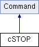

СТОП Подробнее...
#include <command.h>
Граф наследования:cSTOP:

Открытые члены | |
| int | operator() (Computer *) |
| cSTOP::operator () Подробнее... | |
Дополнительные унаследованные члены | |
 Защищенные члены унаследованные от Command Защищенные члены унаследованные от Command | |
| void | loadRegister (Computer *COMP) |
| Command::loadRegister - загрузка внутреннего регистра Подробнее... | |
Подробное описание
СТОП
Методы
§ operator()()
|
virtual |
Объявления и описания членов классов находятся в файлах:
- C:/Users/sstarkov/Documents/kr_InterpreterVM/sources/command.h
- C:/Users/sstarkov/Documents/kr_InterpreterVM/sources/command.cpp